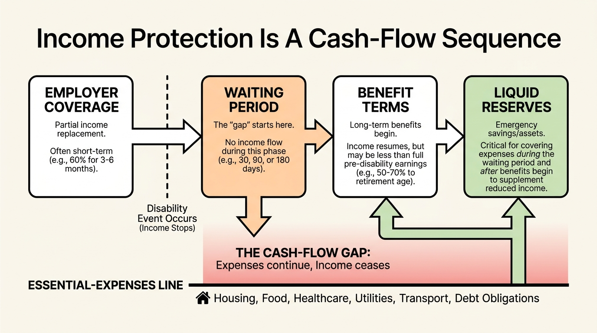
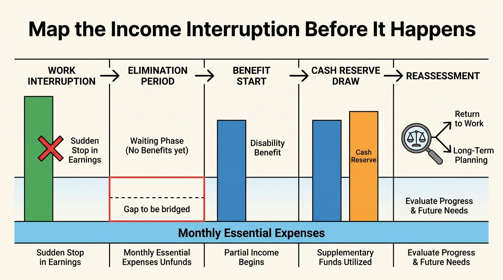

Disability Insurance Leaves Many Paychecks Unprotected
A job can provide health insurance and still leave the income that pays the mortgage weakly protected. In March 2025, only 44 percent of private-industry workers had access to short-term disability coverage and 37 percent had access to long-term coverage, according to the Bureau of Labor Statistics.
Access is not enrollment, and employer coverage is not necessarily enough. Still, the BLS figures establish the central household fact: a large share of private-sector workers do not even have an employer-sponsored disability plan available. At establishments with fewer than 100 workers, access to short-term coverage was 31 percent and access to long-term coverage was 24 percent.
Start with the actual policy
Read the employer plan before pricing an individual policy. Separate short-term from long-term disability, then check the waiting period, benefit percentage, monthly cap, definition of disability, tax treatment, offsets, exclusions, portability, and how long payments can continue. A stated 60 percent benefit can be materially smaller after a cap, taxes, other-income offsets, or a long elimination period.
Do not assume Social Security Disability Insurance fills the same role. Eligibility and benefit rules differ, and it is not a generic replacement-income policy for a temporary work disruption. The relevant question is simpler: how many months of essential spending can the household meet if earnings stop, and from which account?

Test the cash-flow bridge
Build a small interruption model with a start date, the first possible benefit date, expected net benefit, monthly essential expenses, and liquid assets. Include payroll taxes, debt service, health costs, and any dependent care that would remain. A household with substantial retirement assets can still face a near-term cash-flow problem if those assets are costly or impractical to use.
The test is especially useful for households whose fixed expenses were set around two incomes. The relevant exposure is not only the lost salary. It is the gap between income replacement and the monthly commitments that cannot be paused.

Net worth cannot pay this month’s bills unless it is liquid, accessible, and deliberately available for that purpose.
Use the free Explorer as the baseline
WealthMeter's free Explorer can help inventory liquid reserves, debt, and recurring commitments. It cannot quote coverage or replace policy advice. It can make the gap visible before a household decides whether its existing plan, cash reserve, and income mix are sufficient.
| Known | Household action |
|---|---|
| Employer-sponsored disability access is incomplete, especially at smaller establishments. | Confirm whether coverage exists instead of assuming it is part of employment. |
| Policy terms determine when and how much a plan pays. | Model the waiting period, cap, benefit percentage, and offsets. |
| Retirement assets and home equity are not the same as liquid income replacement. | Keep a defined cash-flow bridge for an interruption. |
Sources
U.S. Bureau of Labor Statistics. Employee Benefits in the United States, March 2025. September 25, 2025.
Social Security Administration. Disability Benefits.